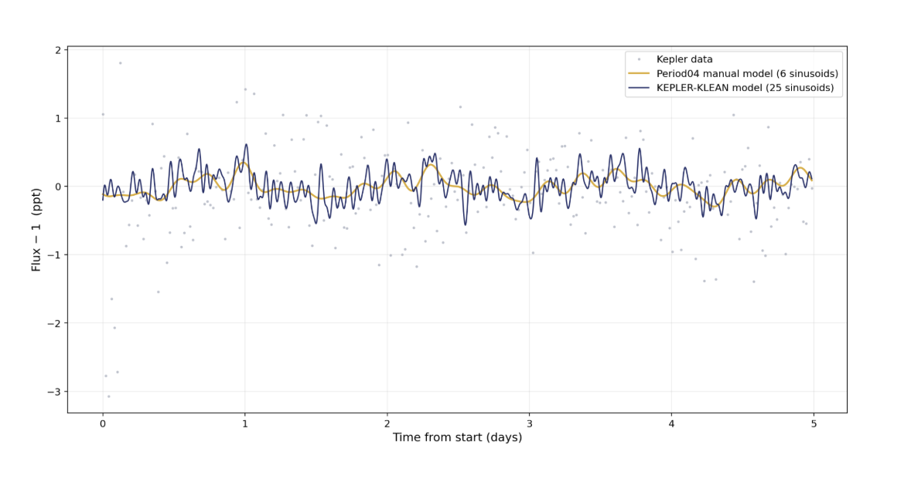
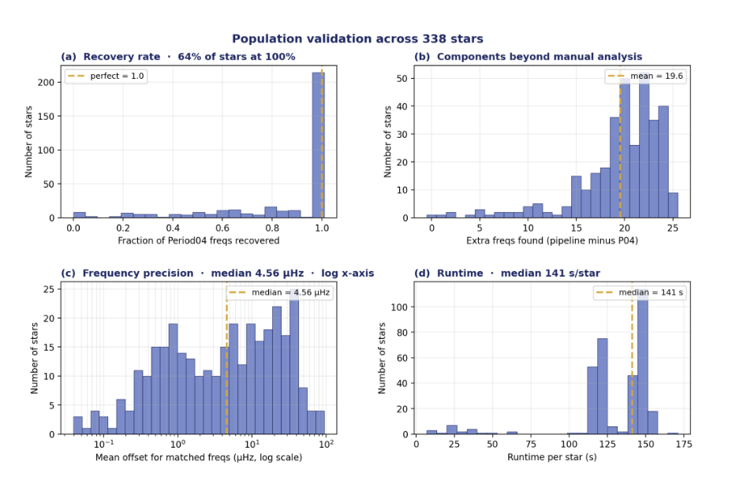

AUTOMATING STELLAR SIGNAL EXTRACTION
Kepler Clean is a Python pipeline I developed with Kenneth Cervantes to automatically pre-whiten A-type star light curves and isolate the periodic signals produced by stellar pulsations. The project was motivated by a practical problem in exoplanet searches: the same pulsations that make A-type stars scientifically interesting can also hide or distort planetary transit signals.
Instead of relying on a researcher to repeatedly identify frequencies and decide when a light curve is “clean enough,” the pipeline combines frequency analysis, Bayesian inference, and an objective stopping rule.
The result is a reproducible workflow designed to process large collections of Kepler stars while preserving uncertainty information about the extracted frequencies.
REPLACING SUBJECTIVE PRE-WHITENING
A-type stars often contain many overlapping pulsation signals. The standard workflow repeatedly identifies a dominant frequency, fits a sinusoid, subtracts it, and continues until the residual appears sufficiently flat.
The difficult part is deciding when to stop. Stopping too early leaves stellar variability in the data; stopping too late can begin fitting noise or removing useful structure. Manual stopping also means that different analysts can make different decisions from the same light curve.
Kepler Clean turns that judgment call into a quantitative model-selection problem, making the process more reproducible and easier to scale.
KIC 4472465
The pipeline was demonstrated on KIC 4472465, a γ Dor / δ Sct hybrid candidate with more than 52,000 long-cadence observations spanning roughly four years.
Kepler Clean recovered all six frequencies identified manually in Period04 to within 5 × 10⁻⁶ cycles/day and continued to extract additional components from the residual light curve. The full automated run took about 125 seconds.

Manual Period04 model compared with the 25-component Kepler Clean model for KIC 4472465.
SCALING FROM ONE STAR TO 338
The stronger test was whether the approach generalized across the full reference set. The pipeline was run on all 338 stars and compared against the manually extracted Period04 frequencies.
Across the population, the pipeline achieved a median 100% recovery of the manual frequency set, with 64% of stars achieving complete recovery. Matched frequencies showed a median offset of 4.6 μHz, while the pipeline found roughly 20 additional components per star beyond the manual analysis.

Population-level validation showing recovery rate, additional extracted frequencies, frequency precision, and runtime across the full dataset.
WHAT I TOOK FROM THE PROJECT
- Automation is most useful when it replaces a subjective decision with a measurable criterion.
- Bayesian methods can make uncertainty part of the output instead of an afterthought.
- Efficient numerical design matters when a workflow has to scale from one example star to hundreds.
- Validation against a human reference set is essential before trusting an automated scientific pipeline.
- The next step is connecting cleaner residual light curves to downstream transit detection and testing performance with injected synthetic signals.